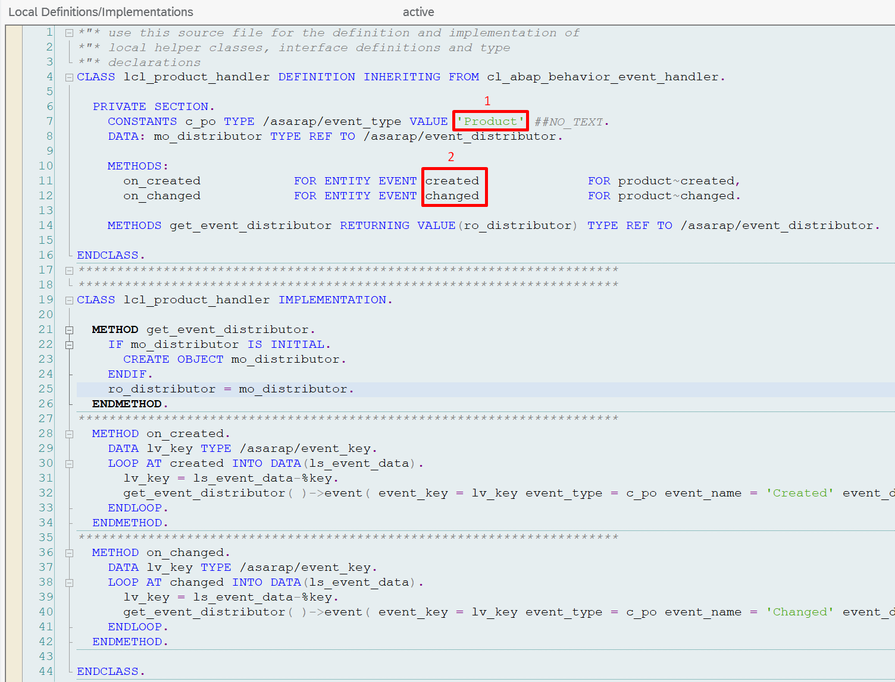
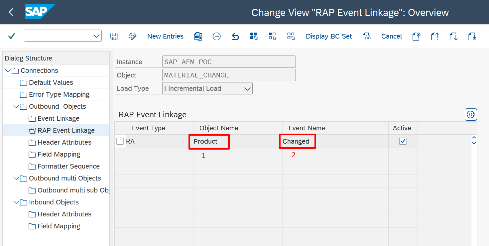

Outbound Messaging
RAP Events
Use business events emitted by SAP RAP (ABAP RESTful Application Programming Model) business objects as native integration triggers – no custom ABAP event wiring needed. Covers event type registration, binding to outbound objects and the supported SAP RAP event types.
Overview
SAP's RESTful Application Programming (RAP) model introduces a standardized event mechanism for business objects. From SAP S/4HANA 2023 onwards, RAP business objects can raise events via the bgRFC (background Remote Function Call) framework. ASAPIO supports consuming these RAP events and routing them to any configured messaging connector.
RAP events require the ASAPIO Event Studio component to be installed and configured.
Prerequisites
- SAP S/4HANA 2023 or higher (on-premise)
- ASAPIO Event Studio installed
- bgRFC framework configured
bgRFC Destination Setup
- Create default bgRFC destination
BGPF:
Use transaction SBGRFCCONF to create the standard BGPF destination required by the SAP RAP event framework. - Create application-specific bgRFC destination (e.g.
ASAPIO):
Create an additional bgRFC destination specific to ASAPIO event processing. This separates ASAPIO's RAP event queue from other bgRFC processing. - Add default value
ACI_BGRFC_DESTINATION:
In the ASAPIO connection instance default values (/ASADEV/ACI_SETTINGS), add the keyACI_BGRFC_DESTINATIONwith the name of the ASAPIO bgRFC destination.
Activating RAP Events
RAP events can be activated in two ways:
Via SAP GUI (SPRO)
- Go to
/ASADEV/ACI_SETTINGS→ RAP Event Linkage - Add a new entry with the following fields:


| Field | Value | Source |
|---|---|---|
| Handler Class | The ABAP handler class for the RAP object (e.g. /ASADEV/CL_RAP_SALESORDER) | Install from the Integration Catalog |
| Event Type | RA | Fixed value |
| Object Name | Name of the RAP business object (e.g. SalesOrder) | Look up in the Integration Catalog |
| Event Name | Name of the event (e.g. Created, Changed) | Look up in the Integration Catalog |
The handler classes, object names, and event names are all provided as part of the Integration Catalog download. Install the handler class transport first, then use the matching object name and event name from the catalog when creating the event linkage entry.
Via Event Studio Deployment
When a RAP event is configured in the ASAPIO Event Studio, the event linkage is automatically created during deployment. This is the recommended approach as it enables version-controlled event definitions. Use the predefined ASAPIO Event Handler classes available from the Integration Catalog as the starting point for each object type.
Supported RAP Objects
The Integration Catalog lists all supported RAP business objects and events. The catalog download includes the handler class transports alongside the matching object names and event names required for the linkage configuration. Examples include:
- Sales Orders (Created, Changed, Deleted, Released)
- Purchase Orders (Created, Changed, Deleted, Released)
- Purchase Requisitions (Created, Changed, Deleted)
- Supplier Invoices (Created, Changed)
- Business Partners (Created, Changed)
- Production Orders (Created, Changed, Released)
- Billing Documents (Created, Changed)
- …and many more
Refer to the Integration Catalog for the complete and up-to-date list.
CDS View Entity Redefinition
The CDS View Entities that SAP defines as part of the standard RAP business objects can be redefined in a customer namespace using the ASAPIO Integration Add-on. This allows you to:
- Add or remove fields from the standard SAP CDS View Entity
- Include calculated or derived fields
- Adjust data types or apply conversions
- Combine data from multiple CDS views into a single payload
Use the integrated CDS View Entity editor in Event Studio to create a redefined view based on the standard RAP object, then reference it in your event configuration. See CDS View Support for details on working with CDS views as data sources.
Custom Payloads
For each RAP event, you can define a custom payload using the Payload Designer:
- Create a Payload Design in transaction
/n/ASADEV/DESIGNusing a CDS View Entity as the data source - In Event Studio, add a new event definition via Add Event Dialog: specify the Payload Design in "Catalog Object Id / Version", and enter the Event Type, Object ID, and Event Name
- Your Payload Design will then appear in the Data Catalog screen and can be deployed from there